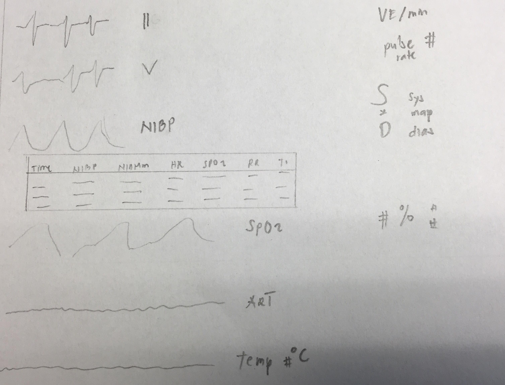

Cutting-Edge Anesthesia
Visualizing patient vital signs during surgery
Link to visualization
Question:
Can we efficiently increase the amount of patient information conveyed to doctors during surgery?
Existing Design:
The target for our design is the vitals sign monitor that is used in most operating rooms in the United States. The particular model we examine is ubiquitous in the University of Washington hospital system.
Here is an example of a vital sign monitor for reference:

Here is a mock up of the vital sign monitor used in the University of Washington hospital system as seen during our surgical observation:

The left side of the screen shows real-time vital signs in 6 rows: EKG lead II, EKG lead V5, blood pressure cuff (NIBP), pulse oygen (SpO2), arterial pressure (ART), and temperature. Blood pressure cuff is in tabular form because it is measured every 3 minutes, with 4 past measurements shown. The other measurements are shown as line plots over the past 10 seconds. This also means that blood pressure is the only measurement for which any sort of history beyond 10 seconds is visible on the vitals display (along with pulse, which is also displayed in the table). An interesting (and ubiquitous) design choice in displaying real-time vital signs is that the data do not scroll as more time points come in; instead, the existing measurements are overwritten, with the current time point shown as a break in the line plot.
The right side of the screen contains labels for the time series, as well as 1 to 5 extra pieces of information per vital sign, all lined up next to their relevant time series: for example, next to the "ECG" row are "ST" (indicating ST segment elevation) and "VE/min" (indicating minute ventilation), as well as a "II" indicating that this is lead II. We counted about 21 separate numbers, sometimes unlabeled, on the right side of the screen.
Design Process:
We identified areas for improvement through multiple interviews with practicing anesthesiologists. We contacted an anesthesiologist collaborator with Alex and Gabe's research group and had a broad unstructured discussion about the use of data displays in the operating room for ~40 minutes. We (Jose and Gabe) next visited the operating room for about 4 hours and spent time observing anesthesiologists using data displays and asking questions about how the displays fit into their work.
Our initial conversations covered the types of monitors in the OR (vital sign monitor, ventilation settings monitor, and medical record monitor). We decided that, given the critiques of each system and the goals of our project (real-time data visualization), we would focus on designing an improved vital sign monitor.
During our discussions and OR observations, we noted several criticisms of existing vital sign displays:
Historical trends in vital signs can't be easily seen (monitor displays only last 10 seconds)
The functionality that does exist (on a different monitor) for showing trends doesn't allow the physician to choose what variables, statistics, and trends should be tracked over time.
Statistics of interest like ST elevation, QRS width, and cerebral perfusion pressure require user input to calculate and display, though they should be automatically calculable.
It's difficult to record and re-access baseline characteristics of the patient for comparison
It could be useful to add a video function to see the patient's face (and airway) even when it's obscured during surgery (e.g. prone position surgery, patient's head is on the opposite side of the operating table from the anesthesiologist).
Details like where certain measurements are made (location of temperature sensor, etc) are not displayed.
Some measurements, like nerve conduction studies, are not displayed on any monitor because they are done by a different department.
Many vital signs and statistics are shown as poorly differentiated plain text on the right side of the monitor, leading to a sense of clutter.
From our OR observations, we decided to keep the following themes in mind as we worked:
Anesthesiologists interact with displays differently at different times: there's lots of time for interaction/customization before surgery. During the start of surgery and critical moments, time and attention is very scarce. There are then long quiet periods during surgery, and another intense period at the end. A good interface should allow users to use interactivity during free time (before surgery, middle of surgery) to prepare for busy moments (start of surgery, etc) -- for example, through customization of which data is displayed.
Anesthesiologists spend most of their "screen time" periodically reviewing vital signs on the vitals monitor, looking at the screen when an alert sounds (which is usually due to an instrument disconnection rather than patient deteriorating) or doing paperwork on the medical record monitor.
Those themes led to the following Design Goals:
Provide a way to access a patient's entire vital sign history, not just the last ten seconds
Use interactivity to allow users to specify and follow long-term trends and statistics computed from the raw data